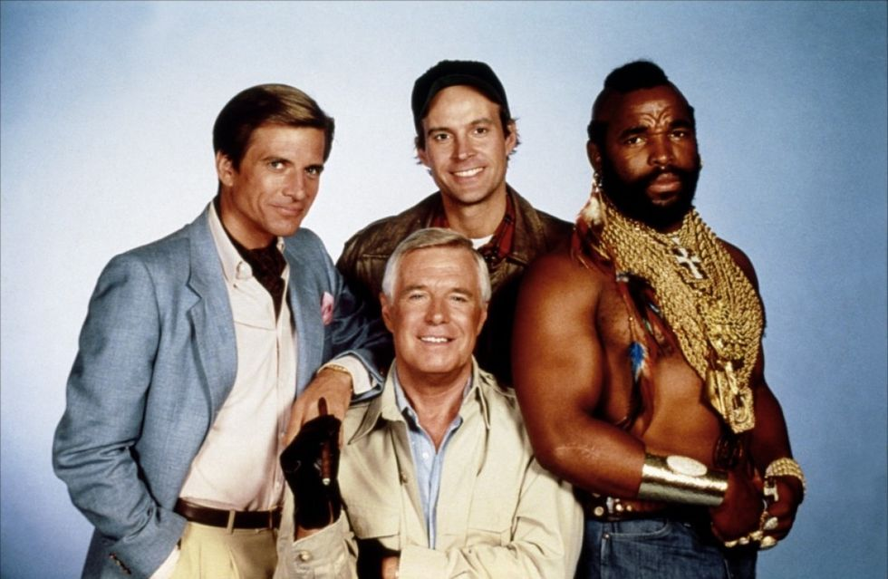
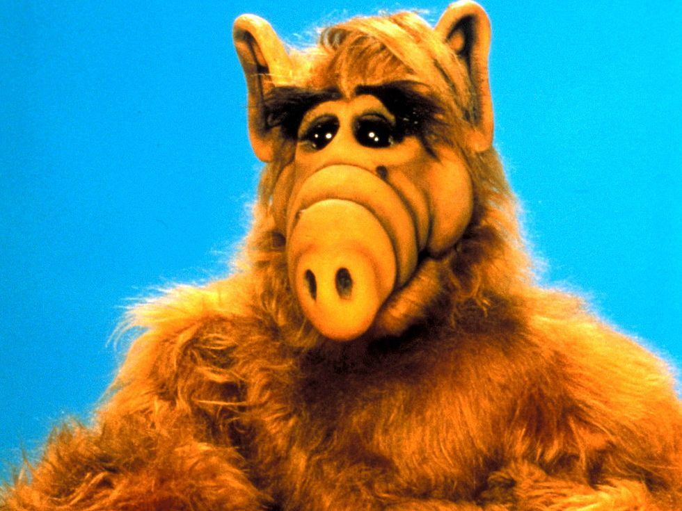
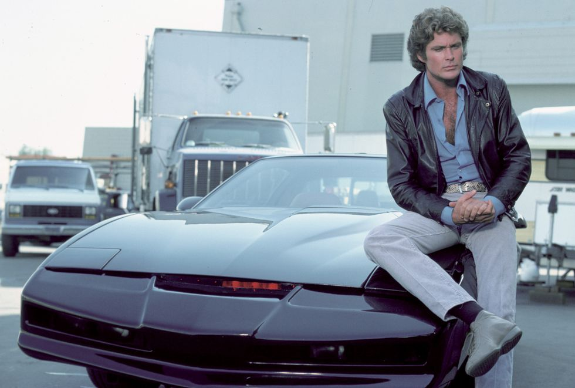
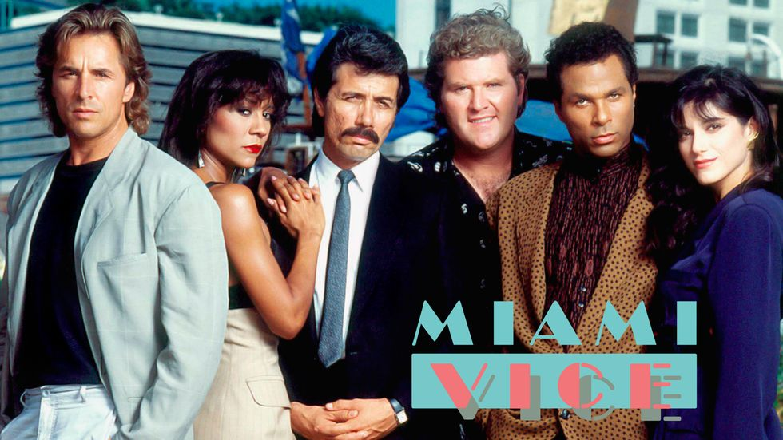

'Seinfeld' (1989-1998)
La serie en la que nunca pasaba nada, pero que conquistó a medio mundo, seguía las vidas de Jerry
Seinfeld y sus amigos. Algunos de los mejores capítulos de 'Seinfeld' se consideran legendarios.
Si te gustó, también deberías ver... 'Broad City', solo porque en ella tampoco pasa nunca nada pero
es tan buena que te hará llorar de risa.
'Los Simpson' (1989-)
La familia más animada de la televisión y prototipo de serie de dibujos para un público adulto. No
necesita mayores presentaciones.
Si te gustó, también deberías ver... Para evitar comparaciones, mejor nos quedamos con esta. No nos
hace falta otra más. En serio. Si no nos crees, echa un ojo a los mejores episodios de 'Los
Simpsons'.

'Brigada A' (1983-1987)
Cuatro de los mejores hombres de un comando militar sobreviven como mercenarios después de haber
sido culpados de un delito que no habían cometido. Una premisa fuerte, acompañada de acción y
testosterona a raudales, engancharon a toda una generación de seriéfilos que no sabían si eran más
de Hannibal o de M.A. Hasta Ana Obregón cayó en las redes de una de las mejores series de acción de
la historia.
Si te gustó, también deberías ver... de momento, no hay ninguna oferta en bandeja. Quizás una serie
coral de superhéroes como 'Agents of S.H.I.E.L.D.' o la próxima 'Legends of Tomorrow' puedan
competir con ella, a pesar de tener conceptos muy diferentes.

'ALF' (1986-1990)
Una parodia de 'E.T.: el extraterrestre' que se les fue de las manos, pero que se acabó
convirtiendo en todo un icono a finales de los 80 (merchandising de por medio), y eso que el suyo
fue uno de los finales más horribles de la historia.
Si te gustó, también deberías ver... 'The Neighbors', una tronchante sitcom familiar sobre dos
familias (una humana, otra alienígena) que viven puerta con puerta. Lamentablemente fue cancelada.

'El auto fantástico' (1982-1996)
David Hasselhoff, las bromitas de KITT y una colección de gadgets que pondrían celoso hasta al
mismísimo James Bond. Posiblemente, una de las series de aquellos años más vistas (y repuestas) en
nuestra televisión.'
Si te gustó, también deberías ver... Obviando el fallido remake de 2008, y dado que un concepto como
este no funcionaría ni de lejos en la tele actual, lo único que nos queda es una serie en la que la
tecnología sea tan protagonista como el humano, como en 'Person of Interest'. Eso sí, aquí "La
Máquina" no es tan divertida.

'Miami vice' (1984-1989)
La famosa serie seguía los pasos de dos policías en sus misiones como agentes encubiertos en Miami.
Mucha música, trajes horteras y laca, completaban la estampa. 'Corrupción en Miami' eran el símbolo
exportable de los años 80 americanos. ¿Sabes qué fue de Philip Michael Thomas, el detective Ricardo
Tubbs de 'Corrupción en Miami'?
Si te gustó, también deberías ver... 'NCIS: Los Angeles', la serie de la franquicia NCIS que se
centra en una división de élite especializada en operaciones encubiertas.